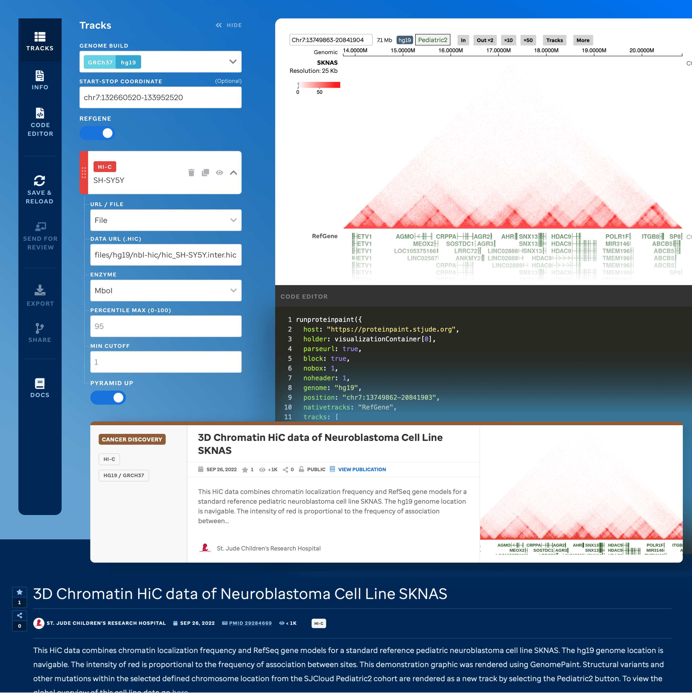
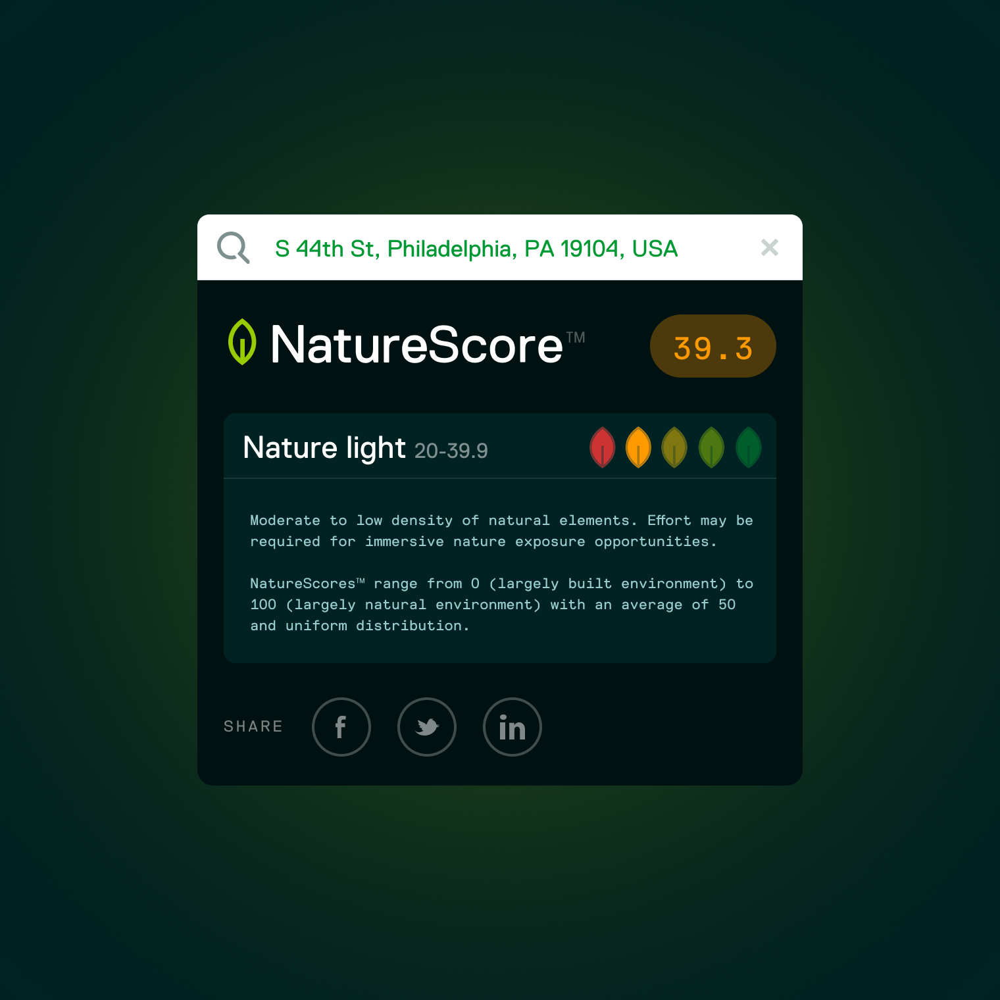
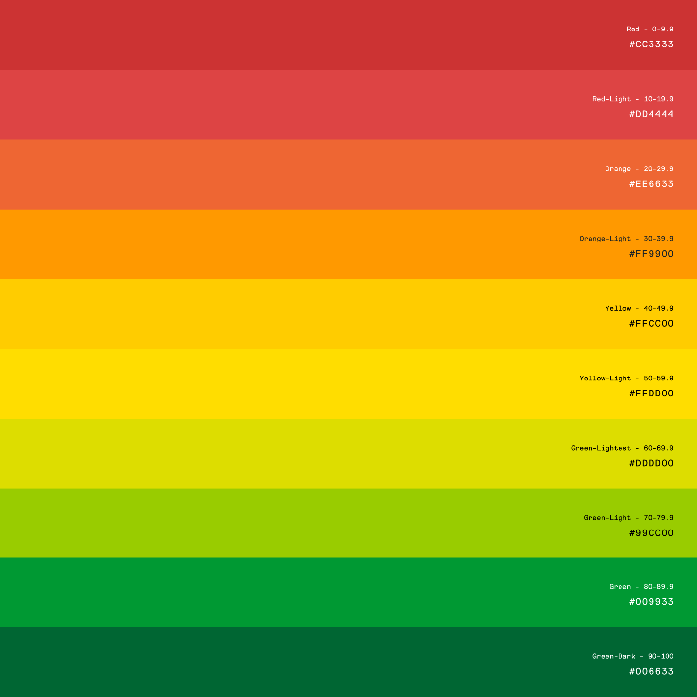

NatureQuant
NatureDose
A mobile app that turns time spent outdoors into a measurable wellness habit.

St. Jude Children's Research Hospital
Visualization Community
A platform that transforms static genomic research into living, interactive visualizations.

NatureQuant
NatureScore
Complex environmental data distilled into a clear, human-readable score.

NatureQuant
NatureQuant
Built the design function from scratch — brand identity, visual language, and a unified design system.

St. Jude Children's Research Hospital
PeCan
A pediatric cancer genomic knowledge base redesigned for clarity and speed.
Under NDA
Health Platform
A first-of-its-kind consumer health app for one of the world's largest pharmaceutical companies.
Under NDA · Launching 2026